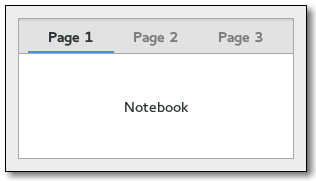

Gtk.Notebook
Example
Methods
| Inherited: | Gtk.Container (27), Gtk.Widget (256), GObject.Object (33), Gtk.Buildable (10) |
|---|
Virtual Methods
| Inherited: | Gtk.Container (10), Gtk.Widget (82), GObject.Object (7), Gtk.Buildable (10) |
|---|
| do_change_current_page(offset) | |
| do_focus_tab(type) | |
| do_insert_page(child, tab_label, menu_label, position) | |
| do_move_focus_out(direction) | |
| do_page_added(child, page_num) | |
| do_page_removed(child, page_num) | |
| do_page_reordered(child, page_num) | |
| do_reorder_tab(direction, move_to_last) | |
| do_select_page(move_focus) | |
| do_switch_page(page, page_num) |
Properties
| Inherited: | Gtk.Container (3), Gtk.Widget (38) |
|---|
| Name | Type | Flags | Short Description |
|---|---|---|---|
| enable-popup | bool | r/w | If True, pressing the right mouse button on the notebook pops up a menu that you can use to go to a page |
| group-name | str | r/w | Group name for tab drag and drop |
| page | int | r/w | The index of the current page |
| scrollable | bool | r/w | If True, scroll arrows are added if there are too many tabs to fit |
| show-border | bool | r/w | Whether the border should be shown |
| show-tabs | bool | r/w | Whether tabs should be shown |
| tab-pos | Gtk.PositionType | r/w | Which side of the notebook holds the tabs |
Child Properties
| Name | Type | Default | Flags | Short Description |
|---|---|---|---|---|
| detachable | bool | False | r/w | Whether the tab is detachable |
| menu-label | str | None | r/w | The string displayed in the child’s menu entry |
| position | int | 0 | r/w | The index of the child in the parent |
| reorderable | bool | False | r/w | Whether the tab is reorderable by user action |
| tab-expand | bool | False | r/w | Whether to expand the child’s tab |
| tab-fill | bool | True | r/w | Whether the child’s tab should fill the allocated area |
| tab-label | str | None | r/w | The string displayed on the child’s tab label |
Style Properties
| Inherited: | Gtk.Widget (17) |
|---|
| Name | Type | Default | Flags | Short Description |
|---|---|---|---|---|
| arrow-spacing | int | 0 | r | Scroll arrow spacing |
| has-backward-stepper | bool | True | r | xlib.Display the standard backward arrow button |
| has-forward-stepper | bool | True | r | xlib.Display the standard forward arrow button |
| has-secondary-backward-stepper | bool | False | r | xlib.Display a second backward arrow button on the opposite end of the tab area |
| has-secondary-forward-stepper | bool | False | r | xlib.Display a second forward arrow button on the opposite end of the tab area |
| has-tab-gap | bool | True | r | Active tab is drawn with a gap at the bottom |
| initial-gap | int | 0 | r | Initial gap before the first tab |
| tab-curvature | int | 1 | r | Size of tab curvature |
| tab-overlap | int | 2 | r | Size of tab overlap area |
Signals
| Inherited: | Gtk.Container (4), Gtk.Widget (69), GObject.Object (1) |
|---|
| Name | Short Description |
|---|---|
| change-current-page | |
| create-window | The ::create-window signal is emitted when a detachable tab is dropped on the root window. |
| focus-tab | |
| move-focus-out | |
| page-added | the ::page-added signal is emitted in the notebook right after a page is added to the notebook. |
| page-removed | the ::page-removed signal is emitted in the notebook right after a page is removed from the notebook. |
| page-reordered | the ::page-reordered signal is emitted in the notebook right after a page has been reordered. |
| reorder-tab | |
| select-page | |
| switch-page | Emitted when the user or a function changes the current page. |
Fields
| Inherited: | Gtk.Container (1), Gtk.Widget (1), GObject.InitiallyUnowned (3), GObject.Object (3) |
|---|
| Name | Type | Access | Description |
|---|---|---|---|
| container | Gtk.Container | r |
Class Details
- class Gtk.Notebook(**kwargs)
Bases: Gtk.Container
The Gtk.Notebook widget is a Gtk.Container whose children are pages that can be switched between using tab labels along one edge.
There are many configuration options for Gtk.Notebook. Among other things, you can choose on which edge the tabs appear (see Gtk.Notebook.set_tab_pos ()), whether, if there are too many tabs to fit the notebook should be made bigger or scrolling arrows added (see Gtk.Notebook.set_scrollable ()), and whether there will be a popup menu allowing the users to switch pages. (see Gtk.Notebook.popup_enable (), Gtk.Notebook.popup_disable ())
# Gtk.Notebook as Gtk.Buildable
The Gtk.Notebook implementation of the Gtk.Buildable interface supports placing children into tabs by specifying “tab” as the “type” attribute of a element. Note that the content of the tab must be created before the tab can be filled. A tab child can be specified without specifying a type attribute.
To add a child widget in the notebooks action area, specify “action-start” or “action-end” as the “type” attribute of the element.
An example of a UI definition fragment with Gtk.Notebook:
<object class="GtkNotebook"> <child> <object class="GtkLabel" id="notebook-content"> <property name="label">Content</property> </object> </child> <child type="tab"> <object class="GtkLabel" id="notebook-tab"> <property name="label">Tab</property> </object> </child> </object>
- static new()
Returns: the newly created Gtk.Notebook Return type: Gtk.Widget Creates a new Gtk.Notebook widget with no pages.
- append_page(child, tab_label)
Parameters: - child (Gtk.Widget) – the Gtk.Widget to use as the contents of the page
- tab_label (Gtk.Widget or None) – the Gtk.Widget to be used as the label for the page, or None to use the default label, “page N”
Returns: the index (starting from 0) of the appended page in the notebook, or -1 if function fails
Return type: Appends a page to notebook.
Parameters: - child (Gtk.Widget) – the Gtk.Widget to use as the contents of the page
- tab_label (Gtk.Widget or None) – the Gtk.Widget to be used as the label for the page, or None to use the default label, “page N”
- menu_label (Gtk.Widget or None) – the widget to use as a label for the page-switch menu, if that is enabled. If None, and tab_label is a Gtk.Label or None, then the menu label will be a newly created label with the same text as tab_label ; if tab_label is not a Gtk.Label, menu_label must be specified if the page-switch menu is to be used.
Returns: the index (starting from 0) of the appended page in the notebook, or -1 if function fails
Return type: Appends a page to notebook, specifying the widget to use as the label in the popup menu.
- get_action_widget(pack_type)
Parameters: pack_type (Gtk.PackType) – pack type of the action widget to receive Returns: The action widget with the given pack_type or None when this action widget has not been set Return type: Gtk.Widget Gets one of the action widgets. See Gtk.Notebook.set_action_widget ().
New in version 2.20.
- get_current_page()
Returns: the index (starting from 0) of the current page in the notebook. If the notebook has no pages, then -1 will be returned. Return type: int Returns the page number of the current page.
- get_group_name()
Returns: the group name, or None if none is set. Return type: str Gets the current group name for notebook.
New in version 2.24.
Parameters: child (Gtk.Widget) – a widget contained in a page of notebook Returns: the menu label, or None if the notebook page does not have a menu label other than the default (the tab label). Return type: Gtk.Widget Retrieves the menu label widget of the page containing child.
Parameters: child (Gtk.Widget) – the child widget of a page of the notebook. Returns: the text of the tab label, or None if the widget does not have a menu label other than the default menu label, or the menu label widget is not a Gtk.Label. The string is owned by the widget and must not be freed. Return type: str Retrieves the text of the menu label for the page containing child.
- get_n_pages()
Returns: the number of pages in the notebook Return type: int Gets the number of pages in a notebook.
New in version 2.2.
- get_nth_page(page_num)
Parameters: page_num (int) – the index of a page in the notebook, or -1 to get the last page Returns: the child widget, or None if page_num is out of bounds Return type: Gtk.Widget Returns the child widget contained in page number page_num.
- get_scrollable()
Returns: True if arrows for scrolling are present Return type: bool Returns whether the tab label area has arrows for scrolling. See Gtk.Notebook.set_scrollable ().
- get_show_border()
Returns: True if the bevel is drawn Return type: bool Returns whether a bevel will be drawn around the notebook pages. See Gtk.Notebook.set_show_border ().
- get_show_tabs()
Returns: True if the tabs are shown Return type: bool Returns whether the tabs of the notebook are shown. See Gtk.Notebook.set_show_tabs ().
- get_tab_detachable(child)
Parameters: child (Gtk.Widget) – a child Gtk.Widget Returns: True if the tab is detachable. Return type: bool Returns whether the tab contents can be detached from notebook.
New in version 2.10.
- get_tab_hborder()
Returns: horizontal width of a tab border Return type: int Returns the horizontal width of a tab border.
New in version 2.22.
Deprecated since version 3.4: this function returns zero
- get_tab_label(child)
Parameters: child (Gtk.Widget) – the page Returns: the tab label Return type: Gtk.Widget Returns the tab label widget for the page child. None is returned if child is not in notebook or if no tab label has specifically been set for child.
- get_tab_label_text(child)
Parameters: child (Gtk.Widget) – a widget contained in a page of notebook Returns: the text of the tab label, or None if the tab label widget is not a Gtk.Label. The string is owned by the widget and must not be freed. Return type: str Retrieves the text of the tab label for the page containing child.
- get_tab_pos()
Returns: the edge at which the tabs are drawn Return type: Gtk.PositionType Gets the edge at which the tabs for switching pages in the notebook are drawn.
- get_tab_reorderable(child)
Parameters: child (Gtk.Widget) – a child Gtk.Widget Returns: True if the tab is reorderable. Return type: bool Gets whether the tab can be reordered via drag and drop or not.
New in version 2.10.
- get_tab_vborder()
Returns: vertical width of a tab border Return type: int Returns the vertical width of a tab border.
New in version 2.22.
Deprecated since version 3.4: this function returns zero
- insert_page(child, tab_label, position)
Parameters: - child (Gtk.Widget) – the Gtk.Widget to use as the contents of the page
- tab_label (Gtk.Widget or None) – the Gtk.Widget to be used as the label for the page, or None to use the default label, “page N”
- position (int) – the index (starting at 0) at which to insert the page, or -1 to append the page after all other pages
Returns: the index (starting from 0) of the inserted page in the notebook, or -1 if function fails
Return type: Insert a page into notebook at the given position.
Parameters: - child (Gtk.Widget) – the Gtk.Widget to use as the contents of the page
- tab_label (Gtk.Widget or None) – the Gtk.Widget to be used as the label for the page, or None to use the default label, “page N”
- menu_label (Gtk.Widget or None) – the widget to use as a label for the page-switch menu, if that is enabled. If None, and tab_label is a Gtk.Label or None, then the menu label will be a newly created label with the same text as tab_label ; if tab_label is not a Gtk.Label, menu_label must be specified if the page-switch menu is to be used.
- position (int) – the index (starting at 0) at which to insert the page, or -1 to append the page after all other pages.
Returns: the index (starting from 0) of the inserted page in the notebook
Return type: Insert a page into notebook at the given position, specifying the widget to use as the label in the popup menu.
- next_page()
Switches to the next page. Nothing happens if the current page is the last page.
- page_num(child)
Parameters: child (Gtk.Widget) – a Gtk.Widget Returns: the index of the page containing child, or -1 if child is not in the notebook Return type: int Finds the index of the page which contains the given child widget.
- popup_disable()
Disables the popup menu.
- popup_enable()
Enables the popup menu: if the user clicks with the right mouse button on the tab labels, a menu with all the pages will be popped up.
- prepend_page(child, tab_label)
Parameters: - child (Gtk.Widget) – the Gtk.Widget to use as the contents of the page
- tab_label (Gtk.Widget or None) – the Gtk.Widget to be used as the label for the page, or None to use the default label, “page N”
Returns: the index (starting from 0) of the prepended page in the notebook, or -1 if function fails
Return type: Prepends a page to notebook.
Parameters: - child (Gtk.Widget) – the Gtk.Widget to use as the contents of the page
- tab_label (Gtk.Widget or None) – the Gtk.Widget to be used as the label for the page, or None to use the default label, “page N”
- menu_label (Gtk.Widget or None) – the widget to use as a label for the page-switch menu, if that is enabled. If None, and tab_label is a Gtk.Label or None, then the menu label will be a newly created label with the same text as tab_label ; if tab_label is not a Gtk.Label, menu_label must be specified if the page-switch menu is to be used.
Returns: the index (starting from 0) of the prepended page in the notebook, or -1 if function fails
Return type: Prepends a page to notebook, specifying the widget to use as the label in the popup menu.
- prev_page()
Switches to the previous page. Nothing happens if the current page is the first page.
- remove_page(page_num)
Parameters: page_num (int) – the index of a notebook page, starting from 0. If -1, the last page will be removed. Removes a page from the notebook given its index in the notebook.
- reorder_child(child, position)
Parameters: - child (Gtk.Widget) – the child to move
- position (int) – the new position, or -1 to move to the end
Reorders the page containing child, so that it appears in position position. If position is greater than or equal to the number of children in the list or negative, child will be moved to the end of the list.
- set_action_widget(widget, pack_type)
Parameters: - widget (Gtk.Widget) – a Gtk.Widget
- pack_type (Gtk.PackType) – pack type of the action widget
Sets widget as one of the action widgets. Depending on the pack type the widget will be placed before or after the tabs. You can use a Gtk.Box if you need to pack more than one widget on the same side.
Note that action widgets are “internal” children of the notebook and thus not included in the list returned from Gtk.Container.foreach ().
New in version 2.20.
- set_current_page(page_num)
Parameters: page_num (int) – index of the page to switch to, starting from 0. If negative, the last page will be used. If greater than the number of pages in the notebook, nothing will be done. Switches to the page number page_num.
Note that due to historical reasons, Gtk.Notebook refuses to switch to a page unless the child widget is visible. Therefore, it is recommended to show child widgets before adding them to a notebook.
- set_group_name(group_name)
Parameters: group_name (str or None) – the name of the notebook group, or None to unset it Sets a group name for notebook.
Notebooks with the same name will be able to exchange tabs via drag and drop. A notebook with a None group name will not be able to exchange tabs with any other notebook.
New in version 2.24.
Parameters: - child (Gtk.Widget) – the child widget
- menu_label (Gtk.Widget or None) – the menu label, or None for default
Changes the menu label for the page containing child.
Parameters: - child (Gtk.Widget) – the child widget
- menu_text (str) – the label text
Creates a new label and sets it as the menu label of child.
- set_scrollable(scrollable)
Parameters: scrollable (bool) – True if scroll arrows should be added Sets whether the tab label area will have arrows for scrolling if there are too many tabs to fit in the area.
- set_show_border(show_border)
Parameters: show_border (bool) – True if a bevel should be drawn around the notebook Sets whether a bevel will be drawn around the notebook pages. This only has a visual effect when the tabs are not shown. See Gtk.Notebook.set_show_tabs ().
- set_show_tabs(show_tabs)
Parameters: show_tabs (bool) – True if the tabs should be shown Sets whether to show the tabs for the notebook or not.
- set_tab_detachable(child, detachable)
Parameters: - child (Gtk.Widget) – a child Gtk.Widget
- detachable (bool) – whether the tab is detachable or not
Sets whether the tab can be detached from notebook to another notebook or widget.
Note that 2 notebooks must share a common group identificator (see Gtk.Notebook.set_group_name ()) to allow automatic tabs interchange between them.
If you want a widget to interact with a notebook through DnD (i.e.: accept dragged tabs from it) it must be set as a drop destination and accept the target “GTK_NOTEBOOK_TAB”. The notebook will fill the selection with a Gtk.Widget pointing to the child widget that corresponds to the dropped tab.
<!-- language="C" --> static void on_drag_data_received (GtkWidget *widget, GdkDragContext *context, gint x, gint y, GtkSelectionData *data, guint info, guint time, gpointer user_data) { GtkWidget *notebook; GtkWidget **child; GtkContainer *container; notebook = gtk_drag_get_source_widget (context); child = (void*) gtk_selection_data_get_data (data); process_widget (*child); container = GTK_CONTAINER (notebook); gtk_container_remove (container, *child); }
If you want a notebook to accept drags from other widgets, you will have to set your own DnD code to do it.
New in version 2.10.
- set_tab_label(child, tab_label)
Parameters: - child (Gtk.Widget) – the page
- tab_label (Gtk.Widget or None) – the tab label widget to use, or None for default tab label
Changes the tab label for child. If None is specified for tab_label, then the page will have the label “page N”.
- set_tab_label_text(child, tab_text)
Parameters: - child (Gtk.Widget) – the page
- tab_text (str) – the label text
Creates a new label and sets it as the tab label for the page containing child.
- set_tab_pos(pos)
Parameters: pos (Gtk.PositionType) – the edge to draw the tabs at Sets the edge at which the tabs for switching pages in the notebook are drawn.
- set_tab_reorderable(child, reorderable)
Parameters: - child (Gtk.Widget) – a child Gtk.Widget
- reorderable (bool) – whether the tab is reorderable or not
Sets whether the notebook tab can be reordered via drag and drop or not.
New in version 2.10.
- do_focus_tab(type)
Type: virtual Parameters: type (Gtk.NotebookTab) – Return type: bool
- do_insert_page(child, tab_label, menu_label, position)
Type: virtual
Parameters: - child (Gtk.Widget) –
- tab_label (Gtk.Widget) –
- menu_label (Gtk.Widget) –
- position (int) –
Return type:
- do_move_focus_out(direction)
Type: virtual Parameters: direction (Gtk.DirectionType) –
- do_page_added(child, page_num)
Type: virtual
Parameters: - child (Gtk.Widget) –
- page_num (int) –
- do_page_removed(child, page_num)
Type: virtual
Parameters: - child (Gtk.Widget) –
- page_num (int) –
- do_page_reordered(child, page_num)
Type: virtual
Parameters: - child (Gtk.Widget) –
- page_num (int) –
- do_reorder_tab(direction, move_to_last)
Type: virtual
Parameters: - direction (Gtk.DirectionType) –
- move_to_last (bool) –
Return type:
- do_switch_page(page, page_num)
Type: virtual
Parameters: - page (Gtk.Widget) –
- page_num (int) –
Signal Details
- Gtk.Notebook.signals.change_current_page(notebook, object)
Signal Name: change-current-page
Flags: Parameters: - notebook (Gtk.Notebook) – The object which received the signal
- object (int) –
Return type:
- Gtk.Notebook.signals.create_window(notebook, page, x, y)
Signal Name: create-window
Flags: Parameters: - notebook (Gtk.Notebook) – The object which received the signal
- page (Gtk.Widget) – the tab of notebook that is being detached
- x (int) – the X coordinate where the drop happens
- y (int) – the Y coordinate where the drop happens
Returns: a Gtk.Notebook that page should be added to, or None.
Return type: The ::create-window signal is emitted when a detachable tab is dropped on the root window.
A handler for this signal can create a window containing a notebook where the tab will be attached. It is also responsible for moving/resizing the window and adding the necessary properties to the notebook (e.g. the Gtk.Notebook :group-name ).
New in version 2.12.
- Gtk.Notebook.signals.focus_tab(notebook, object)
Signal Name: focus-tab
Flags: Parameters: - notebook (Gtk.Notebook) – The object which received the signal
- object (Gtk.NotebookTab) –
Return type:
- Gtk.Notebook.signals.move_focus_out(notebook, object)
Signal Name: move-focus-out
Flags: Parameters: - notebook (Gtk.Notebook) – The object which received the signal
- object (Gtk.DirectionType) –
- Gtk.Notebook.signals.page_added(notebook, child, page_num)
Signal Name: page-added
Flags: Parameters: - notebook (Gtk.Notebook) – The object which received the signal
- child (Gtk.Widget) – the child Gtk.Widget affected
- page_num (int) – the new page number for child
the ::page-added signal is emitted in the notebook right after a page is added to the notebook.
New in version 2.10.
- Gtk.Notebook.signals.page_removed(notebook, child, page_num)
Signal Name: page-removed
Flags: Parameters: - notebook (Gtk.Notebook) – The object which received the signal
- child (Gtk.Widget) – the child Gtk.Widget affected
- page_num (int) – the child page number
the ::page-removed signal is emitted in the notebook right after a page is removed from the notebook.
New in version 2.10.
- Gtk.Notebook.signals.page_reordered(notebook, child, page_num)
Signal Name: page-reordered
Flags: Parameters: - notebook (Gtk.Notebook) – The object which received the signal
- child (Gtk.Widget) – the child Gtk.Widget affected
- page_num (int) – the new page number for child
the ::page-reordered signal is emitted in the notebook right after a page has been reordered.
New in version 2.10.
- Gtk.Notebook.signals.reorder_tab(notebook, object, p0)
Signal Name: reorder-tab
Flags: Parameters: - notebook (Gtk.Notebook) – The object which received the signal
- object (Gtk.DirectionType) –
- p0 (bool) –
Return type:
- Gtk.Notebook.signals.select_page(notebook, object)
Signal Name: select-page
Flags: Parameters: - notebook (Gtk.Notebook) – The object which received the signal
- object (bool) –
Return type:
- Gtk.Notebook.signals.switch_page(notebook, page, page_num)
Signal Name: switch-page
Flags: Parameters: - notebook (Gtk.Notebook) – The object which received the signal
- page (Gtk.Widget) – the new current page
- page_num (int) – the index of the page
Emitted when the user or a function changes the current page.
Property Details
- Gtk.Notebook.props.enable_popup
Name: enable-popup Type: bool Default Value: False Flags: r/w If True, pressing the right mouse button on the notebook pops up a menu that you can use to go to a page
- Gtk.Notebook.props.group_name
Name: group-name Type: str Default Value: None Flags: r/w Group name for tab drag and drop.
New in version 2.24.
- Gtk.Notebook.props.page
Name: page Type: int Default Value: -1 Flags: r/w The index of the current page
- Gtk.Notebook.props.scrollable
Name: scrollable Type: bool Default Value: False Flags: r/w If True, scroll arrows are added if there are too many tabs to fit
- Gtk.Notebook.props.show_border
Name: show-border Type: bool Default Value: True Flags: r/w Whether the border should be shown
- Gtk.Notebook.props.show_tabs
Name: show-tabs Type: bool Default Value: True Flags: r/w Whether tabs should be shown
- Gtk.Notebook.props.tab_pos
Name: tab-pos Type: Gtk.PositionType Default Value: Gtk.PositionType.TOP Flags: r/w Which side of the notebook holds the tabs